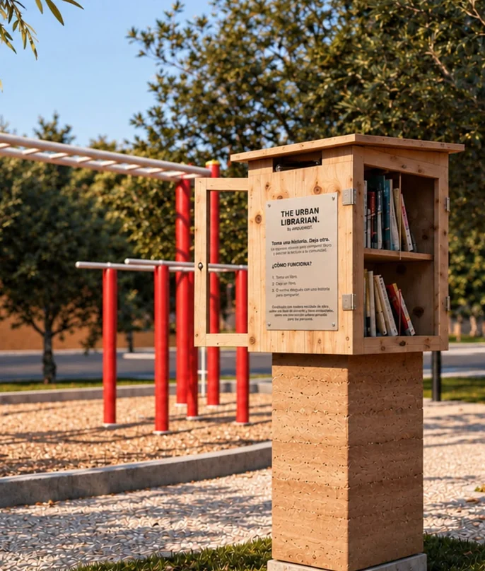
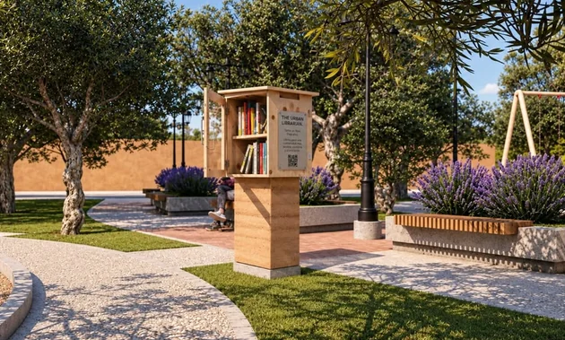

The Urban Librarian.
An urban architecture initiative that seeks to bring reading, culture and the exchange of ideas closer to the everyday spaces of our city.

- Type
- Community library
- Location
- Corregidora, Querétaro, Mexico
- Date
- October 29, 2026
- Material
- Wood reclaimed from construction sites
- Status
- In progress
Idea
The Urban Librarian is a small community library, built from wood reclaimed from construction sites, where anyone can take a book, leave another and share stories.
More than a piece of street furniture, we seek to create a meeting point between people and culture, showing that even the smallest interventions can transform the way we inhabit and share our spaces.
We hope this project grows through the participation of the community, that the books find new readers, and that this first intervention is the beginning of many more.


Because we believe architecture reaches its greatest value when it stops talking about buildings and starts talking about people.